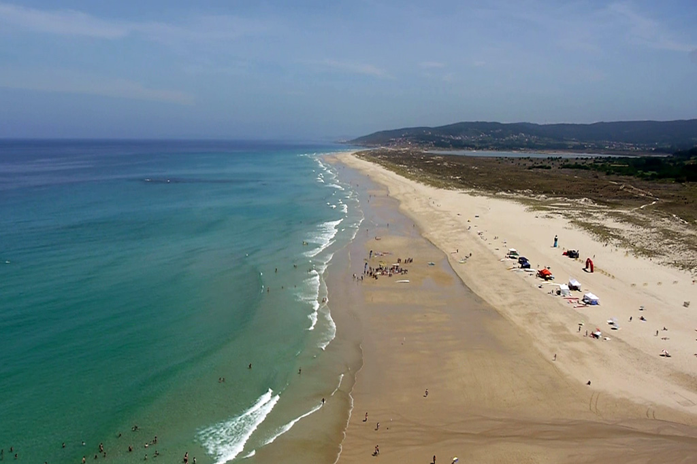

Turismo en Carballo. ¡Qué ver y hacer!

Nuestro MAR
Disfruta de nuestras espectaculares playas, como la de Razo, una de las más grandes y naturales de Galicia, un espacio ideal para el surf y la observación de aves.

Nuestros RÍOS
Un hermoso recorrido que sigue el curso del río Anllóns, ofreciendo un espacio tranquilo y lleno de naturaleza.

Nuestras Fiestas
Disfruta de nuestras múltiples fiestas, conciertos, de nuestra banda de música, charangas, teatro, y un sinfín de eventos culturales.